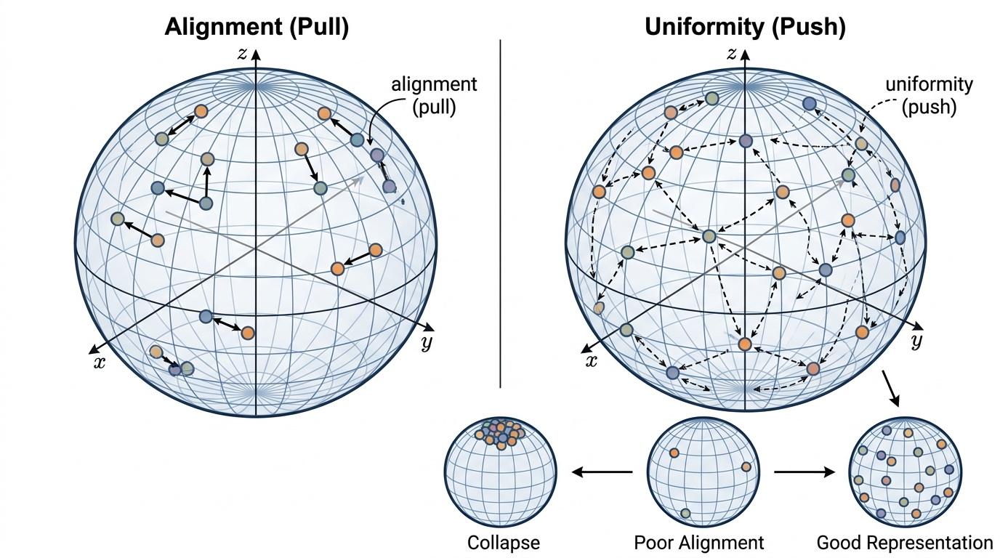

"My entire worldview is a similarity matrix. Everything I know about the universe, I learned by asking: is this pair more alike than that pair?"
A Cosine Similarity With Philosophical Depth
In Section 26.1, we introduced contrastive learning as one of three self-supervised learning (SSL) paradigms and implemented SimCLR (Simple Contrastive Learning of Representations, a framework that uses large in-batch negatives to learn visual features) and MoCo (Momentum Contrast, which maintains a queue of negative embeddings updated by a slowly moving encoder copy) at the systems level. Now we go deeper into the mathematics. We derive the NT-Xent loss from first principles via InfoNCE and mutual information maximization, decompose it into the dual desiderata of alignment and uniformity, analyze the role of temperature scaling and hard negatives, explain why projection heads improve downstream performance, and compare the architectural choices of SimCLR, MoCo, and CLIP (Contrastive Language-Image Pre-training, which aligns image and text encoders in a shared embedding space). By the end of this section, you will understand not just how contrastive objectives work, but why they work and when they fail.
1. From Mutual Information to InfoNCE
Given two electron micrographs of the same nanoparticle, captured under different staining protocols, what exactly do they share, and how would you teach a neural network to quantify that shared information without a single label?
Without contrastive objectives, teams training on unlabeled scientific data routinely watch their encoders collapse: every protein, every molecule, every micrograph maps to nearly the same vector, and downstream classifiers perform no better than random. Contrastive losses are the mathematical machinery that prevents this collapse and turns raw pairs into representations worth using.
The answer lies in mutual information (MI) maximization, the theoretical foundation of contrastive learning. Given two random variables \(X\) and \(Y\) (for example, two augmented views of the same image), mutual information measures how much knowing one tells you about the other:
$$I(X; Y) = \mathbb{E}_{p(x, y)}\left[\log \frac{p(x, y)}{p(x) p(y)}\right]$$If \(X\) and \(Y\) are independent, \(p(x, y) = p(x)p(y)\) and $I(X; Y) = 0$. If \(X\) fully determines \(Y\), $I(X; Y)$ equals the entropy of \(Y\). The goal of contrastive representation learning is to find encoder functions \(f\) such that $I(f(X); f(Y))$ is maximized: the representations should preserve as much information as possible about the relationship between paired views.
What. Mutual information is a measure of statistical dependence between two variables, quantifying the information shared between them in bits (or nats, depending on the log base).
Why. Maximizing MI between representations of paired views forces the encoder to capture the features that are shared across views (semantic content) while discarding features that vary across views (augmentation noise). This is precisely the inductive bias we want.
How. Direct MI estimation is intractable in high dimensions. InfoNCE provides a tractable lower bound that can be optimized with standard gradient descent.
When. The MI maximization framework applies whenever you can define meaningful positive pairs. It is most natural when the pairing captures a notion of semantic equivalence: two views of the same object, an image and its caption, a molecule and its textual description.
Computing MI directly requires knowing the joint and marginal densities, which is intractable for high-dimensional neural network representations. The Information Noise-Contrastive Estimation (InfoNCE) bound (van den Oord et al., 2018) converts MI estimation into a classification problem. Draw a positive pair \((x, y^+)\) from the joint distribution \(p(x, y)\) and \(K\) negative samples \(\{y^-_1, \ldots, y^-_K\}\) from the marginal \(p(y)\). Define a scoring function \(s(x, y)\) (typically cosine similarity of the encoded representations). InfoNCE asks: can you identify which of the \(K+1\) candidates is the true positive?
$$\mathcal{L}_{\text{InfoNCE}} = -\mathbb{E}\left[\log \frac{\exp(s(x, y^+))}{\exp(s(x, y^+)) + \sum_{k=1}^{K} \exp(s(x, y^-_k))}\right]$$This is a \((K+1)\)-way softmax classification where the correct class is the positive pair. The critical theoretical result is that minimizing \(\mathcal{L}_{\text{InfoNCE}}\) maximizes a lower bound on mutual information:
$$I(X; Y) \geq \log(K + 1) - \mathcal{L}_{\text{InfoNCE}}$$As \(K \to \infty\), the bound tightens: more negatives yield a better estimate of MI. This explains the empirical finding that contrastive learning benefits from large numbers of negatives, whether through large batch sizes (SimCLR) or a momentum queue (MoCo). In short: contrastive learning works by converting "which of these candidates is the true partner?" into a tractable lower bound on mutual information, and the quality of that bound scales directly with the number of negatives you can afford.
The InfoNCE bound \(I(X;Y) \geq \log(K+1) - \mathcal{L}_{\text{InfoNCE}}\) reveals that the number of negatives \(K\) directly limits the amount of MI the loss can capture. With \(K=1\), the bound caps at \(\log 2 \approx 0.69\) nats regardless of the true MI. With \(K=65535\) (MoCo's queue), the cap is \(\log 65536 \approx 11.1\) nats. For domains with complex structure (such as protein sequences with rich evolutionary relationships), the true MI between views can be very high, and insufficient negatives create a bottleneck where the model has no gradient signal to learn finer distinctions. This is why SimCLR needed batch sizes of 4096+ and why MoCo's queue was a practical breakthrough.
Step-Through: InfoNCE Loss on a Tiny Batch
Trace through the InfoNCE computation with \(K=2\) negatives and temperature \(\tau=1.0\) to see how the loss selects the positive pair.
Setup. Suppose our anchor embedding is \(z_a = [1, 0]\) (already normalized). The positive is \(z^+ = [0.9, 0.44]\) (cosine similarity \(\text{sim}(z_a, z^+) = 0.9\)). Two negatives: \(z^-_1 = [0.3, 0.95]\) (\(\text{sim} = 0.3\)) and \(z^-_2 = [-0.7, 0.71]\) (\(\text{sim} = -0.7\)).
Step 1: Exponentiate. \(\exp(0.9/1.0) = 2.460\), \(\exp(0.3/1.0) = 1.350\), \(\exp(-0.7/1.0) = 0.497\).
Step 2: Denominator. \(2.460 + 1.350 + 0.497 = 4.307\).
Step 3: Softmax probability of positive. \(2.460 / 4.307 = 0.571\).
Step 4: Loss. \(-\log(0.571) = 0.560\) nats.
Interpretation. The model assigns 57.1% probability to the correct positive. The easy negative (\(z^-_2\), similarity \(-0.7\)) contributes little to the denominator (0.497), while the harder negative (\(z^-_1\), similarity 0.3) contributes more (1.350). With lower temperature, say \(\tau=0.1\), the exponents become \(\exp(9)=8103\), \(\exp(3)=20.1\), \(\exp(-7)=0.001\), giving the positive 99.8% probability and loss \(\approx 0.002\). The hard negative's contribution shrinks drastically, illustrating why low temperature focuses gradients on the very hardest negatives.
2. The NT-Xent Loss: InfoNCE in Practice
NT-Xent (Normalized Temperature-scaled Cross-Entropy) is the specific instantiation of InfoNCE used by SimCLR. Given a batch of \(N\) samples, each producing two views, the scoring function is temperature-scaled cosine similarity:
NT-Xent is a contrastive loss function that trains an encoder by treating each sample's augmented partner as the single correct answer in a \((2N-1)\)-way classification problem, where every other sample in the batch serves as a distractor. It matters because it turns the abstract goal of mutual information maximization into a concrete, GPU-friendly softmax cross-entropy computation that scales linearly with batch size. The mechanism works by normalizing embeddings onto the unit hypersphere (the surface of a sphere in high-dimensional space where every vector has length 1, so that dot products equal cosine similarities), computing all pairwise cosine similarities scaled by a temperature parameter, and then applying a standard log-softmax so that the gradient pulls positive pairs together while pushing all other pairs apart. Use NT-Xent (or its close variants) when you have access to large batches of unlabeled data with a natural pairing structure; for smaller batch regimes where you cannot afford thousands of in-batch negatives, prefer a queue-based variant such as MoCo, or a non-contrastive method such as VICReg that avoids the need for explicit negatives altogether.
$$s(z_i, z_j) = \frac{z_i \cdot z_j}{\|z_i\| \|z_j\| \cdot \tau}$$where \(\tau\) is the temperature parameter. For a positive pair \((z_i, z_j)\) in a batch with \(2N\) total views, the loss for anchor \(z_i\) is:
$$\ell_i = -\log \frac{\exp(\text{sim}(z_i, z_j) / \tau)}{\sum_{k=1}^{2N} \mathbf{1}_{[k \neq i]} \exp(\text{sim}(z_i, z_k) / \tau)}$$where \(\text{sim}(u, v) = u^\top v / (\|u\| \|v\|)\) is cosine similarity and \(j\) is the index of the positive partner of anchor \(i\). The full NT-Xent loss averages over all \(2N\) anchors:
$$\mathcal{L}_{\text{NT-Xent}} = \frac{1}{2N} \sum_{i=1}^{2N} \ell_i$$The following implementation handles numerical stability and shows how temperature affects the loss landscape.
import torch
import torch.nn.functional as F
def nt_xent_loss(z1: torch.Tensor, z2: torch.Tensor,
temperature: float = 0.07) -> torch.Tensor:
"""Compute NT-Xent loss for two sets of L2-normalized embeddings.
Args:
z1: (N, D) normalized embeddings from view 1
z2: (N, D) normalized embeddings from view 2
temperature: scaling parameter (default 0.07)
Returns:
Scalar loss value
"""
N = z1.size(0)
z = torch.cat([z1, z2], dim=0) # (2N, D)
# Full 2N x 2N cosine similarity matrix
sim = torch.mm(z, z.t()) / temperature # (2N, 2N)
# Remove self-similarity from the denominator
mask = ~torch.eye(2 * N, dtype=torch.bool, device=z.device)
# For numerical stability, subtract the max before exp
sim_max, _ = sim.masked_fill(~mask, float('-inf')).max(
dim=1, keepdim=True
)
sim = sim - sim_max.detach()
# Denominator: sum of exp(sim) over all non-self entries
exp_sim = torch.exp(sim) * mask.float()
log_denom = torch.log(exp_sim.sum(dim=1))
# Numerator: positive pair similarity
# Positives: (i, i+N) for i in [0,N) and (i+N, i) for i in [0,N)
pos_indices = torch.cat([
torch.arange(N, 2 * N, device=z.device),
torch.arange(0, N, device=z.device)
])
log_num = sim[torch.arange(2 * N, device=z.device), pos_indices]
loss = -(log_num - log_denom).mean()
return loss
# Demonstrate how temperature affects the loss landscape
z1 = F.normalize(torch.randn(256, 64), dim=1)
z2 = F.normalize(torch.randn(256, 64), dim=1)
for tau in [0.01, 0.07, 0.1, 0.5, 1.0]:
loss = nt_xent_loss(z1, z2, temperature=tau)
print(f" tau={tau:.2f} loss={loss.item():.4f}")With the NT-Xent loss implemented, a natural question arises: what role does the temperature parameter \(\tau\) buried inside that scoring function actually play, and why does its value matter so much more than a typical hyperparameter?
3. Temperature: The Sharpness Dial
Temperature \(\tau\) is the most underrated hyperparameter in contrastive learning. It controls the sharpness of the softmax distribution over similarity scores. To understand its effect, consider what happens at the extremes.
Low temperature (\(\tau \to 0\)). The softmax becomes a hard argmax. Only the most similar negative matters; the loss is dominated by the hardest negative in the batch. This focuses learning on fine-grained discrimination but can be unstable and sensitive to outliers.
High temperature (\(\tau \to \infty\)). The softmax becomes uniform. All negatives contribute equally regardless of similarity. The loss degenerates toward a constant, providing weak gradients. The model barely distinguishes between hard and easy negatives.
Common Misconception
A frequent mistake is believing that lower temperature always produces better representations because it forces the model to focus on the hardest negatives. In practice, very low temperature amplifies noise: a single outlier negative (or a false negative that is actually semantically similar to the anchor) can dominate the entire gradient, causing unstable training and representations that overfit to batch-specific artifacts rather than genuine semantic structure. The optimal temperature balances discrimination sharpness against robustness to noise, and it depends on the data distribution, embedding dimension, and how clean your negative sampling is.
The optimal temperature depends on the data distribution and the encoder capacity. Empirically, \(\tau = 0.07\) is a common default for visual representations with normalized embeddings, while text and scientific data typically benefit from values in the range \(\tau = 0.05\) to \(\tau = 0.1\). The temperature interacts with the embedding dimension and normalization: on the unit hypersphere in \(d\) dimensions, random unit vectors have expected cosine similarity \(0\) with standard deviation \(1/\sqrt{d}\). Lower-dimensional embeddings have higher variance in random similarity, requiring higher temperature to avoid collapse.
import torch
import torch.nn.functional as F
import math
def analyze_temperature_effects(dim: int = 128, n_samples: int = 1000):
"""Show how temperature interacts with embedding dimension."""
z = F.normalize(torch.randn(n_samples, dim), dim=1)
sims = torch.mm(z, z.t())
# Remove diagonal
mask = ~torch.eye(n_samples, dtype=torch.bool)
off_diag = sims[mask]
# Expected statistics of random cosine similarities
empirical_std = off_diag.std().item()
theoretical_std = 1 / math.sqrt(dim)
print(f"Dimension: {dim}")
print(f" Empirical std of cosine sims: {empirical_std:.4f}")
print(f" Theoretical std (1/sqrt(d)): {theoretical_std:.4f}")
# Show softmax concentration at different temperatures
anchor_sims = sims[0, 1:] # sims of sample 0 to all others
for tau in [0.01, 0.07, 0.5]:
probs = F.softmax(anchor_sims / tau, dim=0)
entropy = -(probs * probs.log()).sum().item()
max_prob = probs.max().item()
print(f" tau={tau:.2f}: max_prob={max_prob:.6f}, "
f"entropy={entropy:.2f} "
f"(uniform={math.log(n_samples - 1):.2f})")
for d in [32, 128, 512]:
analyze_temperature_effects(dim=d)
print()When training contrastive embeddings for protein sequences, the optimal temperature depends on the evolutionary diversity of your training set. A dataset drawn from a single protein family (high pairwise similarity) needs lower temperature (\(\tau \approx 0.05\)) to learn the fine-grained distinctions between close homologs. A dataset spanning all of UniProt (low average pairwise similarity) can use higher temperature (\(\tau \approx 0.1\)) because the negatives are naturally well-separated. A practical diagnostic: compute the cosine similarity distribution of random pairs in your dataset. If the distribution has a long right tail (many moderately similar pairs), lower the temperature; if pairs are well-separated, raise it. The goal is a softmax distribution where the hardest negatives receive significant probability mass but do not completely dominate.
4. Alignment and Uniformity
Wang and Isola (2020) provided an elegant decomposition of what makes contrastive representations good. They identified two independent properties, alignment and uniformity, that together explain the success of contrastive objectives.
Alignment measures how close the representations of positive pairs are. For a distribution of positive pairs \((x, x^+) \sim p_{\text{pos}}\):
$$\mathcal{L}_{\text{align}} = \mathbb{E}_{(x, x^+) \sim p_{\text{pos}}} \left[\|f(x) - f(x^+)\|^2\right]$$Good representations have low alignment loss: positive pairs should map to nearby points. This is the "pull" force in contrastive learning.
Uniformity measures how evenly the representations are spread over the unit hypersphere. For a distribution of samples \(x \sim p_{\text{data}}\):
$$\mathcal{L}_{\text{uniform}} = \log \mathbb{E}_{(x, y) \stackrel{i.i.d.}{\sim} p_{\text{data}}} \left[e^{-2\|f(x) - f(y)\|^2}\right]$$Good representations have low (very negative) uniformity loss: features should be spread uniformly over the sphere, not collapsed into a few clusters. This is the "push" force. Figure 26.3 illustrates how these two forces interact to produce useful representations. Figure 26.2.1 illustrates alignment and uniformity decomposition on the unit hypersphere.

Mental Model
Think of alignment and uniformity as the two forces governing how guests arrange themselves at a large cocktail party. Alignment is like name tags: people wearing matching tags (positive pairs) should find each other and stand close together. Uniformity is like the host's goal of filling the entire venue evenly, so that guests spread across the whole room rather than everyone crowding into one corner. A party where matched guests cluster together but the crowd fills the room wall to wall is a success. A party where everyone stands in the same spot (collapse) satisfies name-tag matching trivially but wastes the venue. A party where guests scatter randomly fills the room but matched pairs never meet. The contrastive loss is the invisible social pressure that simultaneously nudges tagged pairs closer and keeps the overall crowd dispersed.
The NT-Xent loss implicitly optimizes both objectives. The numerator (positive pair similarity) corresponds to alignment. The denominator (sum over all pairs including negatives) corresponds to uniformity. Decomposing these components during training provides a powerful diagnostic: if alignment is good but uniformity is poor, the model may be collapsing (mapping many distinct inputs to the same representation). If uniformity is good but alignment is poor, the model may not be learning the semantic relationship between positive pairs.
import torch
import torch.nn.functional as F
def alignment_loss(z1: torch.Tensor, z2: torch.Tensor,
alpha: float = 2.0) -> torch.Tensor:
"""Alignment: expected distance between positive pairs.
Args:
z1, z2: (N, D) L2-normalized embeddings of positive pairs
alpha: exponent (default 2 for squared distance)
"""
return (z1 - z2).norm(dim=1).pow(alpha).mean()
def uniformity_loss(z: torch.Tensor, t: float = 2.0) -> torch.Tensor:
"""Uniformity: log of expected Gaussian kernel over all pairs.
Args:
z: (N, D) L2-normalized embeddings
t: kernel bandwidth (default 2)
"""
sq_pdist = torch.pdist(z, p=2).pow(2)
return sq_pdist.mul(-t).exp().mean().log()
def monitor_contrastive_quality(encoder, data_pairs, device='cpu'):
"""Track alignment and uniformity during training."""
encoder.eval()
with torch.no_grad():
x1, x2 = data_pairs
z1 = F.normalize(encoder(x1.to(device)), dim=1)
z2 = F.normalize(encoder(x2.to(device)), dim=1)
align = alignment_loss(z1, z2).item()
z_all = torch.cat([z1, z2], dim=0)
uniform = uniformity_loss(z_all).item()
encoder.train()
return {
'alignment': align, # lower is better
'uniformity': uniform, # lower (more negative) is better
}
# Demonstrate: random vs collapsed vs good encoder
dim = 64
N = 500
# Random encoder: decent uniformity, poor alignment
z_rand_1 = F.normalize(torch.randn(N, dim), dim=1)
z_rand_2 = F.normalize(torch.randn(N, dim), dim=1)
print("Random encoder:")
print(f" Alignment: {alignment_loss(z_rand_1, z_rand_2):.4f}")
print(f" Uniformity: {uniformity_loss(z_rand_1):.4f}")
# Collapsed encoder: perfect alignment, terrible uniformity
z_collapse = F.normalize(torch.ones(N, dim), dim=1)
z_collapse_noisy = F.normalize(
z_collapse + 1e-6 * torch.randn(N, dim), dim=1
)
print("\nCollapsed encoder:")
print(f" Alignment: {alignment_loss(z_collapse, z_collapse):.4f}")
print(f" Uniformity: {uniformity_loss(z_collapse_noisy):.4f}")
# Good encoder: both metrics small
z_good_1 = F.normalize(torch.randn(N, dim), dim=1)
z_good_2 = F.normalize(z_good_1 + 0.1 * torch.randn(N, dim), dim=1)
print("\nGood encoder:")
print(f" Alignment: {alignment_loss(z_good_1, z_good_2):.4f}")
print(f" Uniformity: {uniformity_loss(z_good_1):.4f}")Exercise 26.2.1
Consider a contrastive learning setup with batch size \(N=4\) (so \(2N=8\) total views). Suppose that after encoding and normalizing, the cosine similarity between the two views of sample 1 is 0.85, while the highest cosine similarity between sample 1's first view and any negative view is 0.60. Using temperature \(\tau=0.1\), compute the softmax probability assigned to the positive pair for sample 1's anchor. Then recompute it with \(\tau=0.5\). Which temperature makes the model "more confident" about the positive, and by how much (in terms of the ratio of probabilities)?
Hint
You do not need the exact similarities of all 6 negatives. For a rough calculation, assume the remaining 5 negatives each have cosine similarity 0.0 with the anchor. Compute \(\exp(\text{sim}/\tau)\) for the positive and each negative, sum the denominator, and divide. The ratio of probabilities at the two temperatures reveals how temperature acts as an amplifier of similarity differences.
Without the uniformity pressure from negative samples, a contrastive encoder can "solve" the alignment objective trivially by mapping every input to the same point (or a small set of points). This is called representation collapse, and it is the fundamental failure mode of contrastive learning. Every architectural innovation in the field addresses collapse in some way. SimCLR prevents collapse through large numbers of in-batch negatives. MoCo prevents it through the momentum queue. BYOL and DINO prevent it without negatives at all, using asymmetric architectures and stop-gradient operations that implicitly maintain uniformity. Understanding collapse is essential: when your contrastive training loss drops to near-zero suspiciously fast, collapse is the most likely explanation.
Alignment and uniformity explain what a good representation looks like, but they also reveal where the training signal comes from: the negatives in the denominator of the loss are the force that prevents collapse and drives uniformity, which raises the question of whether all negatives contribute equally.
5. Hard Negatives and Mining Strategies
Not all negatives are equally informative. An easy negative (a protein from a completely different family compared to your anchor) provides almost no gradient signal because the encoder can already distinguish them. A hard negative (a protein from the same superfamily that performs a different function) forces the encoder to learn subtle discriminative features.
The gradient of the NT-Xent loss with respect to the anchor representation \(z_i\) is dominated by the negatives that have the highest similarity to the anchor. Formally, the contribution of negative \(k\) to the gradient is proportional to:
$$w_k = \frac{\exp(\text{sim}(z_i, z_k) / \tau)}{\sum_j \exp(\text{sim}(z_i, z_j) / \tau)}$$This is exactly the softmax weight of negative \(k\). At low temperature, the gradient is dominated by the single hardest negative. At high temperature, all negatives contribute equally. This means temperature implicitly controls hard negative mining: lower temperature is equivalent to harder mining.
Explicit hard negative mining strategies include:
- In-batch hard negatives: Within a batch, identify the most similar negatives and up-weight their contribution. This is free but limited by batch diversity.
- Cross-batch negatives (MoCo): The momentum queue accumulates negatives from recent batches, increasing the chance of encountering hard negatives.
- Curriculum negatives: Start training with easy negatives and progressively introduce harder ones as the model improves.
- Mined negatives: Use a separate retrieval index to find the hardest negatives offline, then construct batches that pair each anchor with its hardest negatives from the full dataset.
import torch
import torch.nn.functional as F
def mine_hard_negatives(query_embs: torch.Tensor,
corpus_embs: torch.Tensor,
labels: torch.Tensor,
k: int = 5) -> torch.Tensor:
"""Mine the k hardest negatives for each query.
A hard negative has high similarity but a different label.
Args:
query_embs: (N, D) normalized query embeddings
corpus_embs: (M, D) normalized corpus embeddings
labels: (N,) query labels for filtering true positives
k: number of hard negatives per query
Returns:
(N, k) indices into corpus_embs of hardest negatives
"""
# Compute all pairwise similarities
sims = torch.mm(query_embs, corpus_embs.t()) # (N, M)
# Mask out same-label pairs (true positives should not be negatives)
label_match = labels.unsqueeze(1) == labels.unsqueeze(0)
sims[label_match[:, :corpus_embs.size(0)]] = -float('inf')
# Top-k most similar among different-label samples
_, hard_neg_indices = sims.topk(k, dim=1)
return hard_neg_indices
# Example: mine hard negatives for scientific abstract embeddings
N = 200
dim = 64
embeddings = F.normalize(torch.randn(N, dim), dim=1)
topic_labels = torch.randint(0, 10, (N,)) # 10 topics
hard_negs = mine_hard_negatives(
embeddings, embeddings, topic_labels, k=3
)
print(f"Hard negative indices shape: {hard_negs.shape}") # (200, 3)
# Verify: hard negatives have different labels than the query
for i in range(5):
neg_labels = topic_labels[hard_negs[i]]
neg_sims = embeddings[i] @ embeddings[hard_negs[i]].t()
print(f" Query {i} (label={topic_labels[i].item()}): "
f"neg labels={neg_labels.tolist()}, "
f"sims={[f'{s:.3f}' for s in neg_sims.tolist()]}")Hard negative mining improves the quality of the training signal flowing through the contrastive loss, but the architecture of the network that sits between the encoder and that loss turns out to matter just as much.
6. The Projection Head Mystery
One of the most surprising findings in contrastive learning is the role of the projection head. SimCLR showed that adding a small multilayer perceptron (MLP) (typically two layers) between the encoder and the contrastive loss improved downstream performance by over 10%, yet the projection head itself is discarded after training. Downstream tasks use the encoder representations \(h = f(x)\), not the projected representations \(z = g(h)\).
Why does this work? The projection head acts as an information bottleneck that absorbs invariance pressure. The contrastive loss forces projected representations to become augmentation-invariant: two crops of the same image must map to the same \(z\). This process discards information (color distribution, spatial location of the crop) that downstream tasks may need. Placing this pressure on \(z = g(h)\) rather than on \(h = f(x)\) lets the encoder features \(h\) retain that information while the contrastive objective still shapes them.
The features \(h\) contain both augmentation-invariant information (object identity, semantic content) and augmentation-variant information (color, position, scale). The projection head performs the lossy selection that the contrastive loss demands, leaving encoder features richer than a direct contrastive objective would allow.
In practice, projection head design follows a few conventions that have emerged from ablation studies. A two-layer MLP with a hidden dimension matching the encoder output (for example, 2048 for a ResNet-50) and a lower output dimension (128 or 256) is the most common configuration. Adding a third layer rarely helps, and a single linear layer underperforms the nonlinear variant because it cannot absorb as much augmentation-specific information. The output dimension of the projection head controls the granularity of the contrastive comparison: too low, and fine-grained distinctions are lost; too high, and the benefits of the bottleneck diminish.
The landscape of self-supervised learning has advanced well beyond the original SimCLR/MoCo/BYOL generation. SigLIP (Zhai et al., 2023) replaced the softmax-based contrastive loss in CLIP with a per-pair sigmoid loss, eliminating the need for global synchronization of similarity scores across GPUs and enabling training on batch sizes exceeding 1 million pairs. This reformulation treats each image-text pair as an independent binary classification (match or not), which scales more efficiently on distributed hardware and has been reported to achieve comparable or better zero-shot performance than the original CLIP objective on standard benchmarks. Meanwhile, DINOv2 (Oquab et al., 2024) combined self-distillation with curated, diverse pretraining data to produce vision encoders that match or surpass supervised pretraining on dense prediction tasks (segmentation, depth estimation) without any labeled data. For scientific applications, these developments are significant because SigLIP's per-pair formulation naturally handles the unbalanced and noisy pairings common in scientific datasets (molecule-description, spectrum-compound), while DINOv2's strong dense features transfer well to microscopy and remote sensing domains where pixel-level understanding matters.
7. Architectural Comparison: SimCLR, MoCo, and CLIP
The three architectures we introduced in Section 26.1 make different tradeoffs along several axes. Figure 26.4 summarizes the data flow and negative-sourcing strategy of each architecture. Understanding these tradeoffs guides architecture selection for scientific applications.
Negative source. SimCLR draws negatives from the current batch, requiring large batch sizes (4096+) and multi-GPU training. MoCo draws negatives from a momentum queue (65K+), enabling single-GPU training. CLIP draws negatives from cross-modal pairings within the batch, scaling with batch size but benefiting from natural diversity in image-text pairs.
Encoder consistency. SimCLR uses a single encoder for both views (perfectly consistent). MoCo uses a momentum encoder for keys, introducing a small inconsistency that smooths out over training. CLIP uses two separate encoders for the two modalities, which is necessary because images and text require fundamentally different architectures.
Augmentation requirements. SimCLR and MoCo require carefully designed augmentations for a single modality. CLIP requires paired data across modalities (image-caption pairs) but avoids the augmentation design problem because the natural variation between modalities provides the contrastive signal.
Checkpoint
So far in this comparison: SimCLR draws negatives from the current batch (needing large batches), MoCo accumulates them in a momentum queue (enabling single-GPU training), and CLIP draws cross-modal negatives; SimCLR uses a single shared encoder while MoCo introduces a slowly updated copy and CLIP uses two independent encoders; and augmentation strategy differs fundamentally between single-modality and cross-modal setups.
Transfer mechanism. SimCLR and MoCo produce a single-modality encoder whose representations transfer via fine-tuning or linear probing (training a single linear classifier on top of frozen encoder features to evaluate representation quality). CLIP produces aligned cross-modal representations that enable zero-shot transfer: classify images by comparing their embeddings to text descriptions of classes, with no training on the target task. We explore this zero-shot paradigm further in Chapter 27.
import torch
import torch.nn as nn
import torch.nn.functional as F
class CLIPDualEncoder(nn.Module):
"""Simplified CLIP-style dual encoder for text-molecule pairing."""
def __init__(self, text_encoder: nn.Module, mol_encoder: nn.Module,
text_dim: int, mol_dim: int, proj_dim: int = 256,
temperature: float = 0.07):
super().__init__()
self.text_encoder = text_encoder
self.mol_encoder = mol_encoder
# Project both modalities to shared space
self.text_proj = nn.Linear(text_dim, proj_dim, bias=False)
self.mol_proj = nn.Linear(mol_dim, proj_dim, bias=False)
# Learnable temperature (CLIP uses log-parameterization)
self.log_temp = nn.Parameter(
torch.tensor(1.0 / temperature).log()
)
def forward(self, text_features: torch.Tensor,
mol_features: torch.Tensor):
"""Compute CLIP-style symmetric contrastive loss.
Pairs are assumed aligned: text[i] describes mol[i].
"""
# Project and normalize
t = F.normalize(self.text_proj(text_features), dim=1)
m = F.normalize(self.mol_proj(mol_features), dim=1)
# Temperature-scaled similarity
temp = self.log_temp.exp()
logits = torch.mm(t, m.t()) * temp # (N, N)
# Symmetric loss: text->mol and mol->text
labels = torch.arange(t.size(0), device=t.device)
loss_t2m = F.cross_entropy(logits, labels)
loss_m2t = F.cross_entropy(logits.t(), labels)
return (loss_t2m + loss_m2t) / 2
@torch.no_grad()
def zero_shot_classify(self, mol_features: torch.Tensor,
class_text_features: torch.Tensor):
"""Zero-shot: classify molecules by similarity to text."""
m = F.normalize(self.mol_proj(mol_features), dim=1)
t = F.normalize(self.text_proj(class_text_features), dim=1)
sims = torch.mm(m, t.t()) # (N_mol, N_classes)
return sims.argmax(dim=1)
# Example usage with simple encoders
text_enc = nn.Sequential(nn.Linear(768, 256), nn.ReLU())
mol_enc = nn.Sequential(nn.Linear(512, 256), nn.ReLU())
clip_model = CLIPDualEncoder(
text_enc, mol_enc, text_dim=256, mol_dim=256, proj_dim=128
)
# Simulated paired data: descriptions and molecular fingerprints
text_feats = torch.randn(64, 768)
mol_feats = torch.randn(64, 512)
loss = clip_model(text_enc(text_feats), mol_enc(mol_feats))
print(f"CLIP loss: {loss.item():.4f}")zero_shot_classify method that matches molecule embeddings to class descriptions without any labeled training data.Unlike SimCLR, which fixes \(\tau\) as a hyperparameter, CLIP makes temperature learnable. The model starts with \(\tau = 0.07\) and learns to adjust it during training, often converging to values near \(\tau = 0.01\) in reported large-scale experiments. The learnable temperature acts as an automatic calibration mechanism: as the model gets better at discriminating, it can afford sharper (lower temperature) distributions because the positive pair similarity reliably exceeds the hardest negative. Learned temperature has become a widely adopted technique in production embedding models, including several used for text retrieval.
The open_clip library provides production-grade CLIP training with all the engineering details handled: gradient checkpointing, mixed-precision training, distributed data loading, and WebDataset integration. What takes ~100 lines above becomes:
import open_clip
model, preprocess_train, preprocess_val = (
open_clip.create_model_and_transforms(
'ViT-B-32', pretrained='laion2b_s34b_b79k'
)
)
tokenizer = open_clip.get_tokenizer('ViT-B-32')
# Zero-shot classification in 3 lines
image_features = model.encode_image(
preprocess_val(image).unsqueeze(0)
)
text_features = model.encode_text(tokenizer(["a dog", "a cat"]))
probs = (image_features @ text_features.T).softmax(dim=-1)open_clip provides pretrained checkpoints, tokenizers, and preprocessing pipelines. It reduces CLIP training from a multi-day engineering effort to a configuration file. For scientific applications, use it as the starting point and fine-tune with domain-specific paired data. (As of 2024, open_clip also offers checkpoints trained on the more carefully curated DataComp and DFN datasets, which often outperform the earlier LAION-trained weights on downstream benchmarks; prefer these newer checkpoints for new projects.)
Real-World Application: Drug Discovery with MolCLR
MolCLR (Wang et al., 2022) applies contrastive learning to molecular graphs for drug discovery at scale. The system treats atom masking, bond deletion, and subgraph removal as augmentations of the same molecule, then trains a graph neural network (GNN) encoder with the NT-Xent loss on 10 million unlabeled molecules from PubChem. The resulting representations transfer to downstream property prediction tasks (toxicity, solubility, binding affinity) with as few as 50 labeled examples, in several benchmarks outperforming supervised baselines that require thousands of labels. Pharmaceutical companies including Recursion and Insilico Medicine have adopted contrastive pretraining as a standard step in their molecular screening pipelines, where labeled assay data is expensive and scarce.
8. When Contrastive Objectives Fail
Contrastive objectives are powerful but not universal. They can fail in several well-characterized ways that practitioners should watch for.
False negatives. Contrastive losses assume that all non-paired samples in a batch are true negatives, meaning they are semantically unrelated to the anchor. When the dataset contains many semantically similar samples, this assumption breaks: random negatives from the batch may actually be positives. In a dataset of drug molecules, two random molecules might share the same mechanism of action. Treating them as negatives pushes apart representations that should be close. This is especially problematic in scientific domains with continuous similarity (protein sequence space, chemical property space) rather than discrete categories.
Augmentation misspecification. If augmentations are too weak, the model can distinguish views by augmentation artifacts rather than semantic content (a shortcut solution). If augmentations are too strong, they destroy the semantic information you want to preserve. For scientific data, the appropriate augmentation depends heavily on the downstream task, as we discussed in Section 26.1.
Monitor alignment and uniformity throughout training: false negatives degrade alignment, augmentation misspecification creates shortcuts, and dimensional collapse erodes uniformity.
Dimensional collapse. Full representation collapse, where every input maps to the same point, is the extreme failure. A subtler variant is dimensional collapse, where the model uses only a subset of the available embedding dimensions while the rest carry no information, effectively reducing the capacity of the embedding space. The uniformity metric from subsection 4 can detect this: dimensional collapse manifests as poor uniformity even when alignment is good. Centering and whitening the representations (as in the W-MSE variant, which replaces cosine similarity with whitened mean squared error to decorrelate embedding dimensions) can mitigate this failure mode.
Section 26.3 develops quantitative tools for detecting all three failure modes as part of a broader treatment of representation evaluation.
Try It: Build a Contrastive Embedding Space from Scratch
Train a small contrastive model on CIFAR-10 (no labels needed) and visualize the learned embedding space to see alignment and uniformity in action. This project uses only PyTorch and matplotlib.
Step 1. Load CIFAR-10 using torchvision.datasets.CIFAR10 (train split, no labels). Define a pair of augmentations: random resized crop (scale 0.2 to 1.0) plus random color jitter (brightness=0.4, contrast=0.4). Each image produces two augmented views.
Step 2. Build a small encoder: use a ResNet-18 (torchvision.models.resnet18) with the final classification layer replaced by an identity, followed by a two-layer MLP projection head (512 to 256 to 128) with ReLU activation between layers and L2 normalization on the output.
Step 3. Implement the NT-Xent loss from Listing 26.5 (or copy it directly). Train for 50 epochs with batch size 256, learning rate 3e-4 (Adam), and temperature 0.07. Every 10 epochs, compute and log the alignment and uniformity metrics from Listing 26.7 on a held-out validation batch of 500 samples.
Step 4. After training, extract encoder features (before the projection head) for 2000 test images. Apply t-SNE (t-distributed Stochastic Neighbor Embedding, a nonlinear dimensionality reduction method that preserves local neighborhood structure) or UMAP (Uniform Manifold Approximation and Projection, a similar technique that also preserves more global structure) to reduce to 2D. Color the points by their true CIFAR-10 class (which the model never saw during training) and observe whether semantically similar classes cluster together.
Step 5. Plot the alignment vs. uniformity trajectory from your logs as a scatter plot with epoch labels. Verify that alignment decreases (positive pairs converge) while uniformity stays low (representations remain spread). If uniformity rises sharply, your model may be collapsing; try increasing batch size or lowering the learning rate.
Lab: Temperature Sweep on STL-10
Goal. Empirically discover the optimal contrastive temperature for a vision encoder by measuring alignment, uniformity, and linear probe accuracy across a range of \(\tau\) values.
Tools needed. PyTorch, torchvision (for STL-10 unlabeled split and ResNet-18), scikit-learn (for the linear probe), matplotlib.
Procedure. Train five identical SimCLR models on STL-10's 100K unlabeled images for 30 epochs each, varying only the temperature: \(\tau \in \{0.01, 0.05, 0.1, 0.3, 1.0\}\). Use ResNet-18 as the backbone with a two-layer MLP projection head (512 to 128), batch size 256, and the NT-Xent loss from Listing 26.5. After each training run, freeze the encoder and fit a logistic regression classifier (scikit-learn's LogisticRegression) on the labeled train split using the encoder's features, then evaluate on the test split.
What to vary. Temperature \(\tau\) (primary variable). Optionally repeat with embedding dimensions 64 and 256 to observe the interaction between dimension and temperature.
What to observe. (1) Plot alignment and uniformity metrics versus \(\tau\); expect a U-shaped pattern in uniformity loss, with very low \(\tau\) causing instability and very high \(\tau\) causing weak gradients. (2) Plot linear probe accuracy versus \(\tau\); the peak should fall near the standard \(\tau = 0.07\) to \(0.1\) range. (3) For the extreme \(\tau = 0.01\) run, check whether the training loss oscillates or the uniformity metric degrades rapidly, both signs of hard-negative dominance destabilizing training.
Exercises
- Conceptual: Explain why the InfoNCE bound \(I(X;Y) \geq \log(K+1) - \mathcal{L}_{\text{InfoNCE}}\) implies that a dataset with very high mutual information between views (such as two near-identical augmentations) might paradoxically give worse representations than a dataset with moderate MI. (Hint: consider what the encoder needs to learn when the views are too similar versus when they differ in augmentation-irrelevant ways.)
- Coding: Implement a training loop that logs both alignment and uniformity metrics every 50 steps while training a SimCLR model. Create a scatter plot of alignment vs. uniformity over training. At what point does alignment improve fastest? Does uniformity degrade during early training? Use the functions from Listing 26.7.
- Analysis: A colleague trains a contrastive model on electron microscopy images of nanoparticles using random rotation, random brightness, and Gaussian blur as augmentations. The model achieves excellent retrieval of similar particle shapes but fails to distinguish particles of different sizes. Diagnose the problem in terms of the augmentation-invariance framework, and propose a fix.